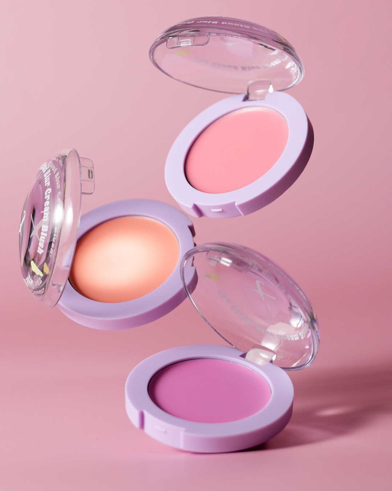
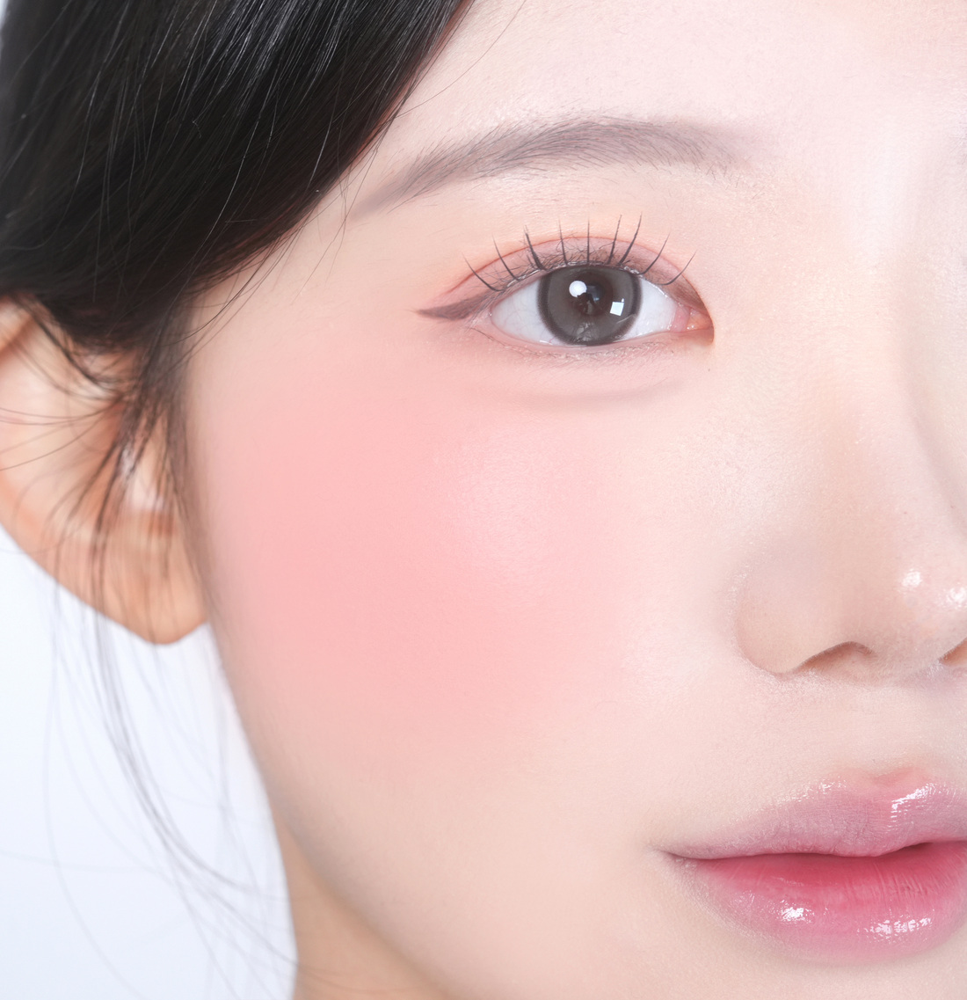
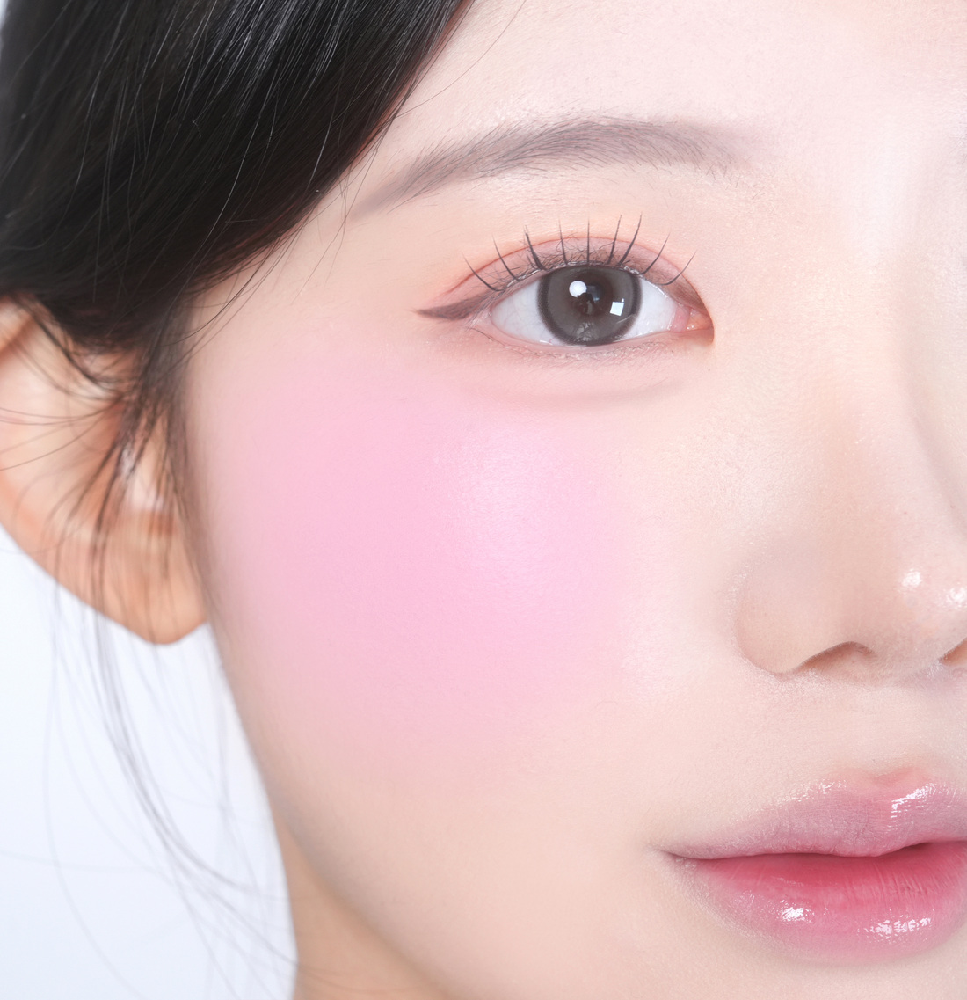
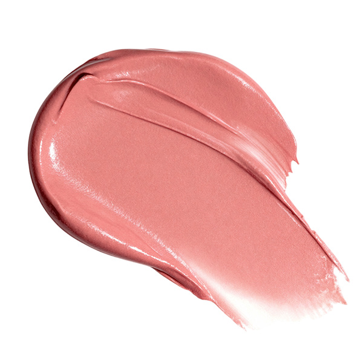
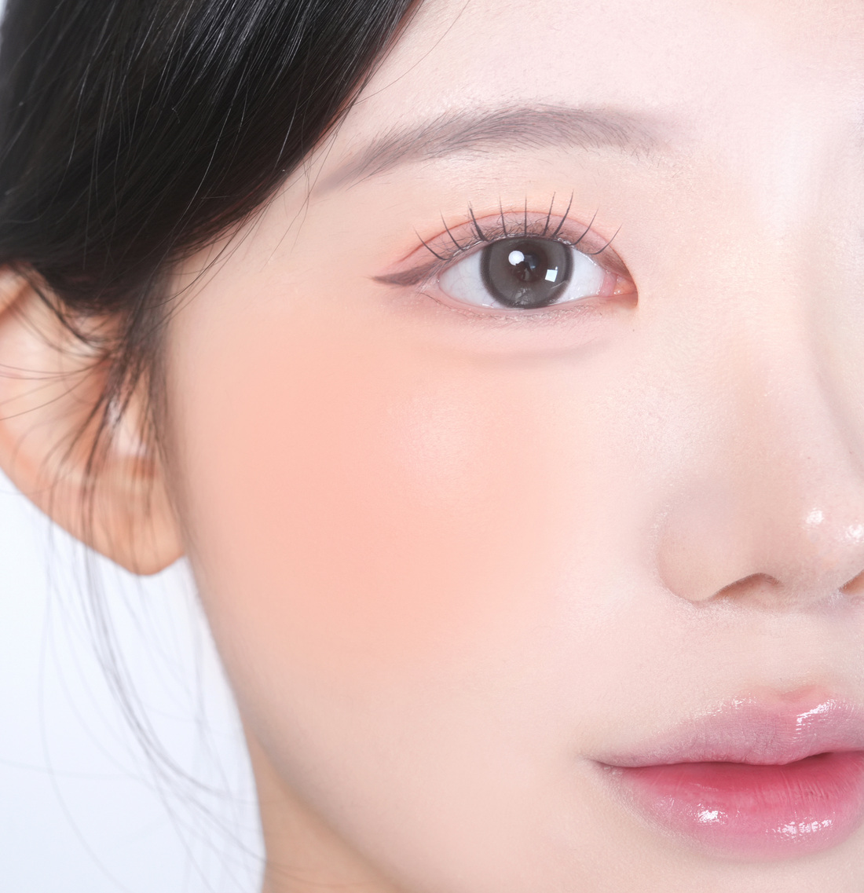
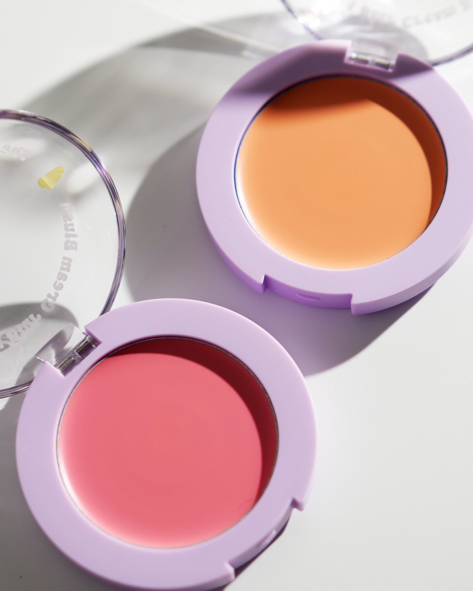
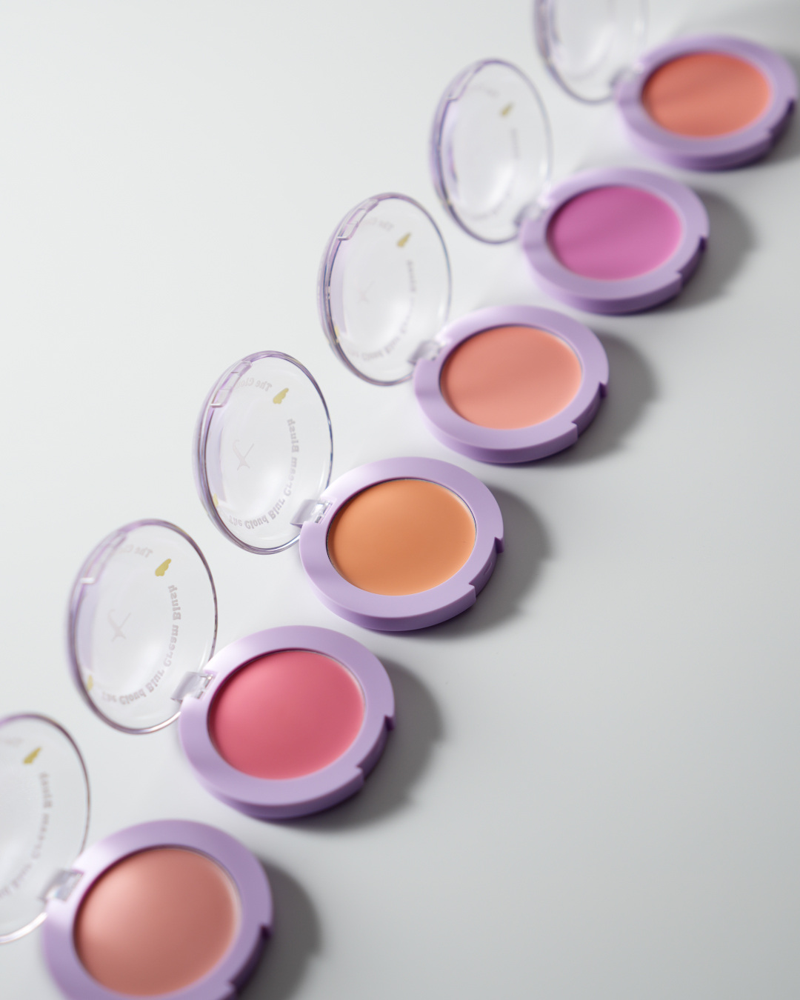

더 클라우드 블러 크림 블러셔
볼 위에 부드럽게,
생기는 보송하게.
크림처럼 펴 바르는
여섯 가지 블러 컬러.

더 클라우드 블러 크림 블러셔
크림처럼 펴 바르는
여섯 가지 블러 컬러.

가볍게 두드려 펴 바르면
볼 위에 은은하게 번지는 생기.
피치부터 베리, 살구까지.
내게 어울리는 색을 찾아보세요.
WHITE PEACH SHAKE


부드러운 피치 핑크
GUAVA SHAKE


차분한 로지 핑크
ACAI BERRY SHAKE


화사한 라벤더 핑크
PAPAYA SHAKE

따뜻한 코랄 오렌지
DRAGON FRUIT SHAKE

생기 있는 선명한 핑크
APRICOT SHAKE


차분한 살구 베이지
피부 톤과 사용량, 조명 및 화면 환경에 따라 발색이 다르게 보일 수 있습니다.
크림 제형이 부드럽게 펴 발리고,
파우더리하게 마무리돼요.
손끝이나 도구에
소량을 묻혀 주세요.
생기를 더할 부위에
가볍게 두드려 주세요.
원하는 색감까지
얇게 덧발라 주세요.
여섯 가지 컬러에 공통으로 담았어요.

APRICOT KERNEL OIL
CAMELLIA SEED OIL
OLIVE FRUIT OIL
PLUM SEED OIL

용량 및 중량 2.8 g I 0.09oz 제품 주요 사양 모든 피부 사용 기한 개봉 전 36개월 / 개봉 후 12개월 사용 방법 손가락이나 도구를 이용해 생기가 필요한 부분에 얇게 펴 바르고 가볍게 두드려 밀착시켜줍니다. 화장품책임판매업자 주식회사 에이위즈 제조국 한국 품질보증 기준 본 제품에 이상이 있을 경우, 공정거래 위원회 고시 소비자 분쟁 해결 기준에 따라 보상해 드립니다. 탐뷰티 고객상담실 1668-0868( 수신자 요금부담)
[ 탐 뷰티 더 클라우드 블러 크림 블러셔01 백도 쉐이크] 아이소노닐아이소노나노에이트, 실리카, 티타늄디옥사이드, 폴리글리세릴-2트라이아이소스테아레이트, 마이카, 네오펜틸글라이콜다이카프릴레이트/다이카프레이트, 합성왁스, 폴리하이드록시스테아릭애씨드, 세레신, 피이지-10다이메티콘, 메티콘, 황색5호, 레시틴, 글리세릴카프릴레이트, 알루미늄하이드록사이드, 아이소스테아릭애씨드, 아이소프로필미리스테이트, 에틸헥실팔미테이트, 에틸헥실글리세린, 폴리글리세릴-3폴리리시놀리에이트, 적색104호의(1), 토코페릴아세테이트, 적색202호, 동백나무씨오일, 살구씨오일, 올리브오일, 서양자두씨오일
[ 탐 뷰티 더 클라우드 블러 크림 블러셔02 구아바 쉐이크] 아이소노닐아이소노나노에이트, 실리카, 티타늄디옥사이드, 폴리글리세릴-2트라이아이소스테아레이트, 마이카, 네오펜틸글라이콜다이카프릴레이트/다이카프레이트, 합성왁스, 폴리하이드록시스테아릭애씨드, 세레신, 피이지-10다이메티콘, 메티콘, 레시틴, 황색5호, 글리세릴카프릴레이트, 알루미늄하이드록사이드, 아이소스테아릭애씨드, 아이소프로필미리스테이트, 에틸헥실팔미테이트, 적색202호, 에틸헥실글리세린, 폴리글리세릴-3폴리리시놀리에이트, 황색4호, 다이아이소스테아릴말레이트, 흑색산화철, 토코페릴아세테이트, 살구씨오일, 동백나무씨오일, 올리브오일, 서양자두씨오일
[ 탐 뷰티 더 클라우드 블러 크림 블러셔03 아사이베리 쉐이크] 아이소노닐아이소노나노에이트, 실리카, 티타늄디옥사이드, 폴리글리세릴-2트라이아이소스테아레이트, 마이카, 네오펜틸글라이콜다이카프릴레이트/다이카프레이트, 합성왁스, 폴리하이드록시스테아릭애씨드, 세레신, 적색104호의(1), 피이지-10다이메티콘, 메티콘, 레시틴, 글리세릴카프릴레이트, 알루미늄하이드록사이드, 아이소스테아릭애씨드, 아이소프로필미리스테이트, 에틸헥실팔미테이트, 에틸헥실글리세린, 폴리글리세릴-3폴리리시놀리에이트, 황색산화철, 청색1호, 토코페릴아세테이트, 동백나무씨오일, 살구씨오일, 올리브오일, 서양자두씨오일
[ 탐 뷰티 더 클라우드 블러 크림 블러셔04 파파야 쉐이크] 아이소노닐아이소노나노에이트, 실리카, 티타늄디옥사이드, 폴리글리세릴-2트라이아이소스테아레이트, 마이카, 네오펜틸글라이콜다이카프릴레이트/다이카프레이트, 합성왁스, 폴리하이드록시스테아릭애씨드, 세레신, 피이지-10다이메티콘, 황색5호, 메티콘, 레시틴, 글리세릴카프릴레이트, 알루미늄하이드록사이드, 아이소스테아릭애씨드, 아이소프로필미리스테이트, 에틸헥실팔미테이트, 적색104호의(1), 에틸헥실글리세린, 폴리글리세릴-3폴리리시놀리에이트, 황색산화철, 적색202호, 토코페릴아세테이트, 동백나무씨오일, 살구씨오일, 올리브오일, 서양자두씨오일
[ 탐 뷰티 더 클라우드 블러 크림 블러셔05 용과 쉐이크] 아이소노닐아이소노나노에이트, 실리카, 티타늄디옥사이드, 폴리글리세릴-2트라이아이소스테아레이트, 마이카, 네오펜틸글라이콜다이카프릴레이트/다이카프레이트, 합성왁스, 폴리하이드록시스테아릭애씨드, 세레신, 피이지-10다이메티콘, 메티콘, 레시틴, 황색5호, 글리세릴카프릴레이트, 알루미늄하이드록사이드, 적색202호, 아이소스테아릭애씨드, 아이소프로필미리스테이트, 에틸헥실팔미테이트, 에틸헥실글리세린, 폴리글리세릴-3폴리리시놀리에이트, 적색201호, 토코페릴아세테이트, 살구씨오일, 동백나무씨오일, 올리브오일, 서양자두씨오일
[ 탐 뷰티 더 클라우드 블러 크림 블러셔06 살구 쉐이크] 아이소노닐아이소노나노에이트, 실리카, 티타늄디옥사이드, 폴리글리세릴-2트라이아이소스테아레이트, 마이카, 네오펜틸글라이콜다이카프릴레이트/다이카프레이트, 합성왁스, 폴리하이드록시스테아릭애씨드, 세레신, 피이지-10다이메티콘, 황색5호, 메티콘, 레시틴, 글리세릴카프릴레이트, 알루미늄하이드록사이드, 황색산화철, 아이소스테아릭애씨드, 아이소프로필미리스테이트, 에틸헥실팔미테이트, 에틸헥실글리세린, 폴리글리세릴-3폴리리시놀리에이트, 적색202호, 토코페릴아세테이트, 살구씨오일, 동백나무씨오일, 올리브오일, 서양자두씨오일
공식몰 제품 정보 보기 ↗